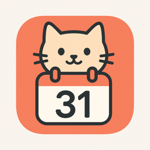
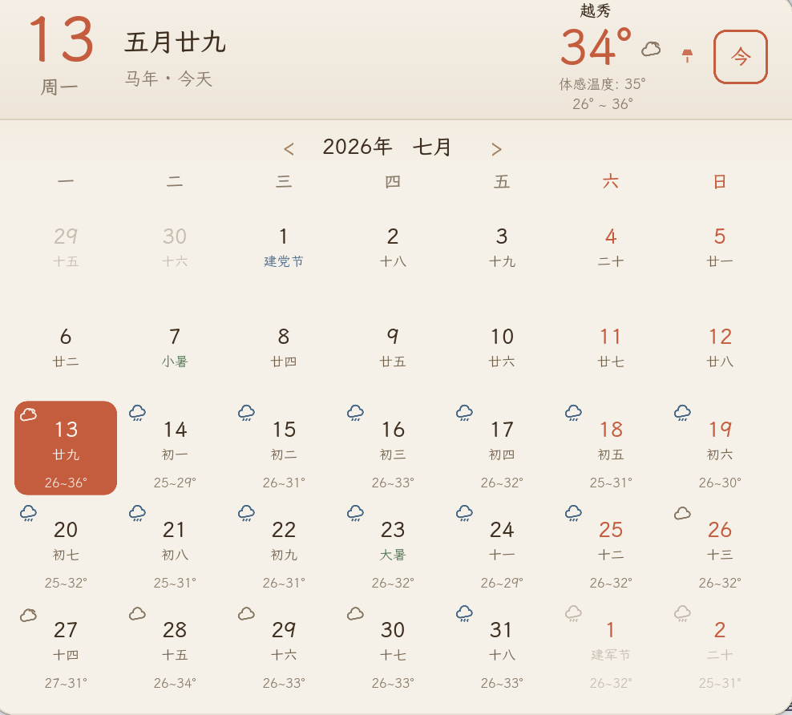

轻巧的 macOS 菜单栏农历万年历
A tiny Chinese lunar calendar for your Mac's menu bar
免费 · 开源 · 支持 Apple Silicon 与 Intel · 自动更新

月历中每一天同时标注农历日期,覆盖 1925–2125 共两百年。
二十四节气、农历传统节日、公历/国际节日一目了然。
「休 / 班」角标每日自动更新,调休安排不再翻公告。
今日栏显示所在地实时温度与体感温度,每个日期格标注天气图标与高低温。
图标实时显示星期与日期,无需点开即可看今天。
Rust + Slint 原生渲染,非 Electron,启动快、体积小、内存占用极低。
Tiny Chinese Lunar Calendar is a free, open-source lunar calendar app that lives in the macOS menu bar. One click pops up a full month view with Chinese lunar dates (农历), the 24 solar terms, traditional festivals, official PRC public-holiday markers, and live weather with a daily forecast. Built with Rust + Slint for native rendering — instant startup and a tiny memory footprint. Works on Apple Silicon and Intel Macs.